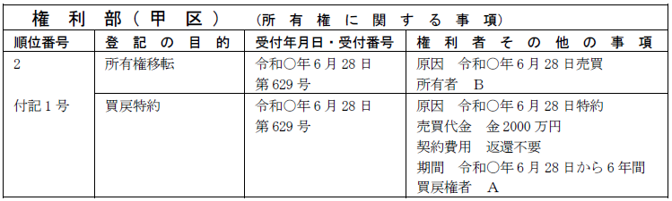
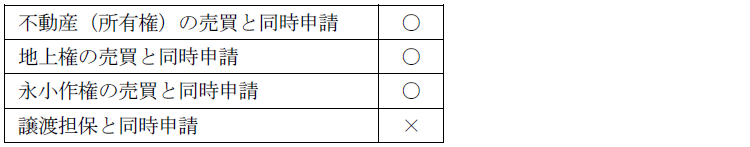

第１編 各 論
第１章 所有権の登記
第２節 所有権移転の登記
Ⅲ 所有権に関するその他の登記
不動産の売主は、売買契約と同時にした買戻しの特約により、買戻期間内に買主が支払った代金（別段の合意をした場合はその合意により定めた金額）及び契約の費用を返還して、売買の解除をすることができる（民法579条前段、583条1項）。
買戻しの特約の登記は、売買による所有権移転の登記と同時に、別個の申請情報によって申請する（昭35.3.31民甲712）。不動産には所有権のほか、不動産を目的とする地上権、永小作権等で売買できるものを含む。
【申請例40 買戻特約 移転登記との同時申請】
事例： 令和○年6月28日、ＡとＢは、Ａ所有の甲土地を代金2000万円で売却する契約を締結し、その際、契約日から6年間、契約費用の返還を要せずに買戻しをすることができることを約し、代金金2000万円がＡに支払われた。なお、所有権移転登記は同時に申請している。

1. 買戻特約の登記事項（59条各号を除く。）と関連論点
(1) 登記申請手続
(a) 登記の目的
「買戻特約」と記載する。
(b) 登記原因及びその日付
登記原因は「特約」と記載し、日付は特約成立の日（＝売買契約成立の日）を記載する。買戻しの特約を付した売買契約において、所有権の移転の日の特約が定められていた場合には、所有権の移転の登記の登記原因の日付とは異なる登記原因の日付で、買戻しの特約の登記の申請をすることができる。
(c) 申請人
登記権利者：売買契約の売主
登記義務者：売買契約の買主
(d) 登記事項
【絶対的登記事項】
ⅰ「売買代金」又は「合意金額」（別段の合意をした場合）
：買主が支払った代金（別段の合意をした場合はその合意により定めた金額）
ⅱ「契約費用」
①数個の不動産を一括して売買した場合の買戻しの特約の登記においては、不動産ごとに買戻代金及び契約費用を定めなければならない（昭35.8.1民甲1934）。
すべての不動産を同時に買い戻すとは限らないからである。
②買戻しの特約の登記の申請情報として、同時申請の売買による所有権移転の登記の申請情報に添付されている売買契約書等の登記原因証明情報の記録又は記載と異なる代金及び費用が提供されている場合にも、その買戻しの特約の登記の申請をすることができる（昭35.8.1民甲1934）。
③契約費用がないときは、申請情報の内容として「契約費用なし」と記載する（登研184P.67）。契約費用の返還を要しない旨の特約がある場合には、「契約費用 返還不要」と記載する。
【任意的登記事項】
・「期間」：買戻しの期間の定め
①10年を超える期間を買戻しの期間とした申請情報を提供した場合、登記申請は却下される（民法580条1項前段、登研187P.77）。
②特約で10年を超える期間を買戻しの期間としても、買戻し期間を10年として申請情報を提供すれば受理される（民法580条1項後段参照）。
③「売買代金につき支払期間が10年を超えるときは令和○年○月○日まで10年間、5年以内のときは令和○年○月○日まで5年間、5年を超え10年に満たないときは売買代金支払完了まで」と記載する定めの登記は申請することができない（昭34.1.27民甲126）。
(e) 添付情報
添付情報は、登記原因証明情報のみである（不登令別表64添付情報）。
(2) 関連論点
(a) 同時申請
①買戻特約の登記は、売買による登記と同時にしなければならない。

②ＡがＢの新築建物を買戻しの特約付きで買い受け、Ａを表題部所有者とする当該建物の表題登記がされた場合には、Ａの所有権の保存の登記の申請と同時に、Ｂのための買戻しの特約の登記の申請をすることができるか？
→できる（昭38.8.29民甲2540）。
③買戻しの特約の仮登記は、所有権の移転の仮登記と同時に申請することを要しない（昭36.5.30民甲1257）。この後、所有権移転仮登記の本登記をする時に、以下の登記を同時に申請する必要がある。
・所有権移転仮登記の本登記 ＋ 買戻特約の仮登記の本登記
・所有権移転仮登記の本登記 ＋ 買戻特約の登記
（買戻特約の仮登記をしていなかった場合）
(b) 付記登記
①買戻特約は、売買による所有権移転登記に付記される。
②買戻しの特約を付した売買契約がなされ、その旨の所有権移転仮登記を申請する場合、当該所有権移転仮登記に付記して、買戻しの特約の仮登記を申請することができる（昭36.5.30民甲1257）。
2. 買戻権の行使
(1) 総説
不動産の売主は、売買契約と同時にした買戻しの特約により、買主が支払った代金（別段の合意をした場合はその合意により定めた金額）及び契約の費用を返還して、売買の解除をすることができる（民法579条前段）。
買戻権の行使により、買主に所有権が移転しなかった状態となる。従って、買主が設定した抵当権等も、買戻権の行使によって消滅する。
【申請例41 買戻権 行使】
事例： Ａは、Ｂに対して、買戻期間内である令和○年6月28日、甲土地の甲区3番の登記原因である売買契約の代金及び契約費用の合計金1100万円を現実に提供し、買戻権行使の意思表示をした。土地の課税標準の額は、金1000万円である。
(2) 登記申請手続
(a) 登記申請の方法
買戻権を行使したことによる買戻しの登記は、抹消登記ではなく所有権移転の登記による（大元.9.30民444）。買戻しは売買契約の解除であるため（民法579条前段）、本来は抹消登記を申請すべきであるが（解除の遡求効）、便宜的に所有権移転の登記とされている。
(b) 登記の目的
登記の目的は、「所有権移転」と記載する。
(c) 登記原因及びその日付
登記原因は「買戻」と記載し、日付は買戻権行使の意思表示が相手方に到達した日を記載する。
(d) 申請人
登記権利者：買戻権者
登記義務者：行使時の目的不動産の登記名義人
(e) 添付情報
・承諾証明情報（不登令別表26添付情報ヘ）
添付情報は、基本的には通常の所有権移転登記の場合と同じであるが、当該登記をする際には、買戻権を目的として設定された質権等の登記は、登記官の職権により抹消される。そのため、登記上の利害関係を有する第三者があるときは、当該第三者の承諾を証する当該第三者が作成した情報、又は当該第三者に対抗することができる裁判があったことを証する情報を提供しなければならない。
(3) 関連論点
(a) 行使期間
ⅰ 買戻しによる所有権の移転の登記の登記原因の日付が、買戻しの期間経過前である場合には、買戻しによる所有権の移転の登記の申請は、買戻しの期間経過後であってもすることができる（登研227P.74）。
ⅱ 買戻特約の付いた農地については、買戻しの期間内に買戻権行使の意思表示がされていれば、農地法所定の許可の到着が買戻期間経過後であっても当該買戻しは有効である（昭42.2.8民甲293）。
(b) 買戻特約の登記
買戻権の登記は、買戻しを登記原因とする所有権移転の登記がされれば、職権で抹消されるため（不登規174条）、申請をする必要はない。
3. 買戻特約の抹消登記
(1) 総説
買戻しの期間が満了した場合や、買戻権が取消し又は解除によって消滅した場合には、買戻特約の抹消登記を申請する。また、買戻特約付売買の契約の日から10年を経過した場合には、単独申請による抹消登記が認められる。
【申請例42 買戻特約の抹消登記 買戻期間満了】
事例： 令和○年10月29日、買戻期間が満了したことから、買戻権者Ａと土地所有者Ｂは、買戻特約の登記の抹消登記を申請した。
(2) 登記申請手続
(a) 登記の目的
「○番付記1号買戻権抹消」と記載する。
(b) 登記原因及びその日付
登記原因は「買戻期間満了」、「取消」、「解除」等と記載し、日付は買戻期間満了であれば、その期間満了日の翌日、取消し又は解除の場合には、その効力が生じた日を記載する。
不登法69条の2の規定により登記権利者が単独申請でする買戻特約の抹消登記の登記原因は「不動産登記法第69条の2の規定による抹消」であり、日付の記載は不要である（令5.3.28民二.538）。
(c) 申請人
【共同申請】
登記権利者：現在の不動産の登記名義人
登記義務者：買戻権者
【単独申請】
ⅰ 契約から10年経過後の単独申請（不登法69条の2）
買戻しの特約に関する登記がされている場合において、契約の日から10年を経過したときは、60条の規定にかかわらず、登記権利者は、単独で当該登記の抹消を申請することができる（不登法69条の2）。
買戻期間は10年が上限であり（民法580条）、契約の日から10年を経過した買戻登記は不要であることから規定された。
69条の2の規定に基づき単独申請による抹消登記が申請され、当該登記が完了したときは、登記官から当該買戻しの登記名義人であった者に対し、登記が完了した旨の通知がされる（不登規183条1項3号）。
ⅱ 不登法70条2項の規定に基づく単独申請（後述）
(d) 添付情報
①登記原因証明情報
不登法69条の2の規定により登記権利者が単独で申請する場合には、登記原因証明情報の提供を要しない（不登令7条3項1号）。
②登記識別情報（22条本文）
買戻権の登記がされた際に通知された登記義務者の登記識別情報
③印鑑証明書（不登令16条2項、18条2項）
登記義務者の印鑑証明書
買戻権は債権であるが、不動産を取得する権利であるので、所有権移転の登記に準じて登記義務者の印鑑証明書の提供を要する。
④承諾証明情報（不登令別表26添付情報ヘ）
登記上の利害関係を有する第三者があるときは、当該第三者の承諾を証する当該第三者が作成した情報、又は当該第三者に対抗することができる裁判があったことを証する情報の提供を要する。
ex.買戻権を目的として、差押えの登記を受けている者
(3) 関連論点
①買戻しの特約の付記登記がされた所有権移転登記の抹消登記を申請するときは、これに先立って又は同時に、買戻しの特約の抹消登記の申請をすることを要する（昭41.8.24民甲2446）。買戻権が行使された場合ではないので、職権で抹消されることはない。
②買戻しの特約の登記の抹消を申請する場合において、登記義務者である買戻権者の現住所が登記記録上の住所と異なるときは、当該買戻権者の住所について変更が生じたことを証する情報を提供すれば、抹消登記の前提として、買戻権の登記名義人の表示の変更登記を申請することを要しない（昭31.10.17民甲2370）。所有権以外の登記名義人の名変登記であるからである。
4. 買戻権移転の登記
(1) 総説
買戻権も財産権の1つとして、譲渡することができ、また相続の局面では、相続財産に含まれる。買戻権の移転の登記は、買戻特約の登記に付記してされる（不登規3条4号）。すなわち、付記登記の付記登記となる。
(2) 登記申請手続
(a) 登記の目的
「○番付記1号買戻権移転」と記載する。
地上権移転の登記と同時に買戻特約の登記が申請され、当該買戻権が移転したときは「○番地上権付記1号の付記1号買戻権移転」となる。
※地上権移転登記は付記登記により実行されるからである。
(b) 登記原因及びその日付
登記原因は「売買」や「相続」等とし、日付は売買等の効力が生じた日である。
(c) 申請人
売買等による場合には、買戻権の取得者を登記権利者、買戻権の登記名義人を登記義務者とする共同申請による（60条）。相続の場合には、相続人の単独申請となる（63条2項）。
(d) 添付情報
①登記識別情報（22条本文）
売買等の場合は、共同申請なので、登記義務者の登記識別情報の提供を要するのが原則である。これに対して、相続の場合は、単独申請なので、登記識別情報の提供を要しない。
②印鑑証明書（不登令16条2項、18条2項）
売買等の場合においては、買戻権は債権であるが、不動産を取得する権利であるので、所有権移転の登記に準じて登記義務者の印鑑証明書の提供を要する。これに対して、相続の場合は、単独申請なので、印鑑証明書の提供を要しない。
※所有権の登記名義人となるわけではないので、登記権利者の住所証明情報は不要である。
5. 買戻権の変更・更正登記
買戻権の登記事項に変更や誤りがあった場合には、変更登記・更正登記が認められる。売買代金の増額・減額、買戻期間の変更があった場合などである。
買戻権の変更・更正登記も、原則通り共同申請による（60条）。代金の減額の場合、権利者は買戻権者、義務者は不動産登記名義人である。